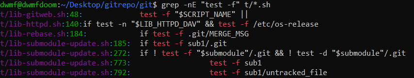
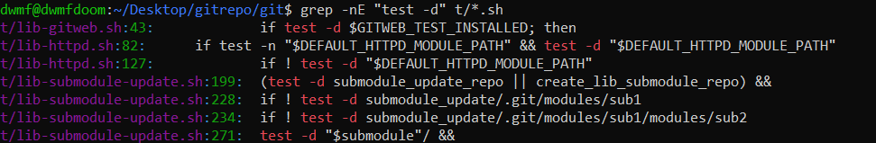
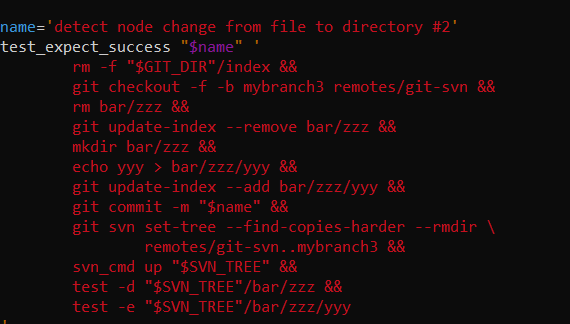
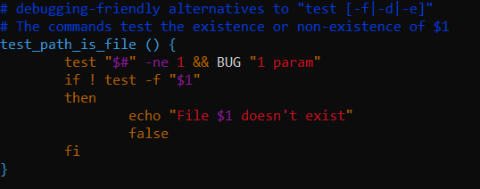
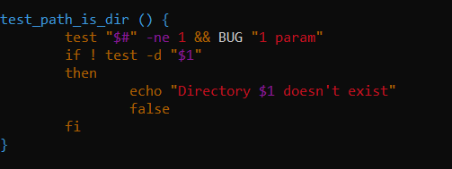
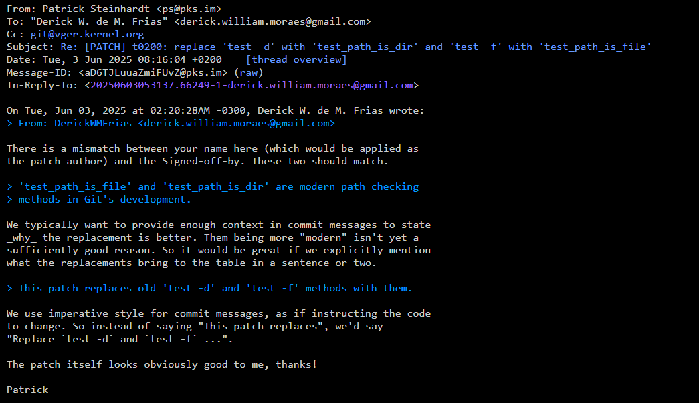
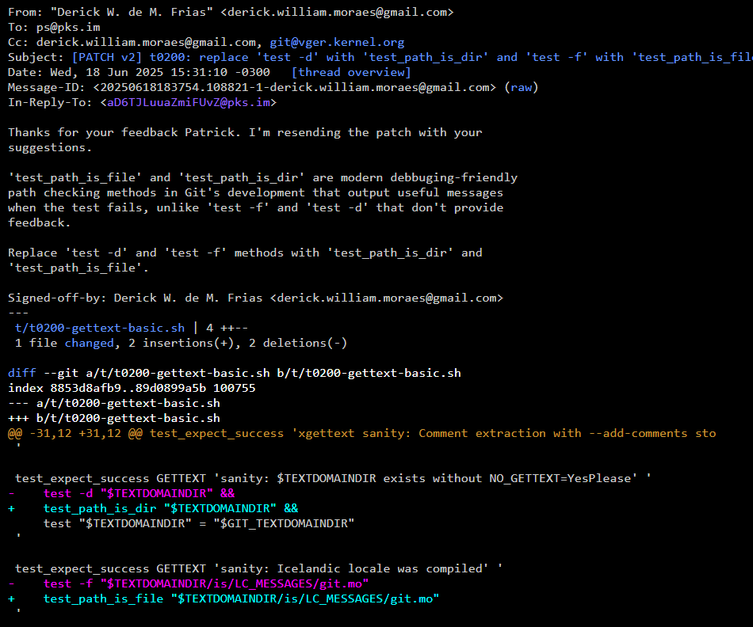

Enquanto eu estava começando a pensar na minha primeira contribuição dessa fase, eu logo me interessei pelo Git. Por um lado, por ser uma ferramenta incrivel, mas mais porque é escrito em C. E eu acho que já programo em C faz muito tempo para nunca ter encontrado uma base de código real-world pesada em C.
Contribuir para o projeto do Git é com certeza uma experiência interessante; Por um lado, encontrar issues para começar pode ser um pouco trabalhoso (É dificil). Por outro lado, o processo de desenvolvimento é muito gostoso, simples e intuitivo, e a comunidade é mega engajada. Minha primeira contribuição com o git foi bastante simples; enquanto pesquisava por issues, encontrei nas sugestões do GSoC 2019 a proposta de substituir algumas funções nos scripts de testes automatizados do Git.
Dentro da estrutura de diretórios um tanto caótica do git, todos os testes (centenas) estão implementados como scripts .sh diretamente abaixo do diretório '/t' (Como o Lucas Oshiro disse uma vez, uma estrutura de diretórios peculiar). Dentro desses scripts, algumas chamadas são feitas para fazer checagem do tipo dos arquivos testados, e foi nessa parte que fiz minha contribuição.
A checagem de tipos antiga dentro do git usava as chamadas nativas do bash "test -f" e "test -d". Essas chamadas chegam respectivamente se o caminho que vem na sequência é respectivamente ou um arquivo de fato ou um diretório. Dentro do diretório de testes, podemos observar algumas instâncias dessas chamadas:
 Um exemplo de um teste git, dentro do arquivo t/t9100-git-svn-basic.sh:
O que eu fiz foi substituir estas chamadas pelos métodos test_path_is_file() e test_path_is_dir(), que são chamadas do Git criadas para substituir "test -f" e "test -d". Esses métodos test_path_is_file() e test_path_is_dir() provém informação de debug quando os testes falham, enquanto os métodos nativos do bash falham silenciosamente. A implementação dessas funções no git estão definidas no diretório t/test-lib-functions.sh. Vejamos essas implementações:
 Depois que enviei o patch, recebi uma resposta em menos de uma hora (Pense numa comunidade engajada). Recebi o seguinte feedback do Patrick Steinhardt:
Sim, três pitacos num envio simples. Mas bem, coisas simples de serem resolvidas também. Por não estar acostumado a usar o git send-email, acabei enviando um signoff com meu nome errado.
Além disso, o mantenedor pediu para que eu deixasse uma mensagem no envio do patch do porquê ele é relevante. Isso, como explicamos já, é porque os métodos substituídos dão feedback de pior qualidade quando falham. Também requisitou que minha mensagem de commit fosse posta no imperativo para manter o estilo da base de código.
Como precisei alterar os pontos solicitados pelo Patrick, fiz o envio de uma v2 do patch, mas depois disso ainda não obtive resposta. Aqui esta o envio e o print:
